Subsection 7.8.1 Consumer and Producer Surplus
When we looked at supply and demand curves we found an equilibrium point where the amount being offered for sale was equal to the amount people wanted to buy.
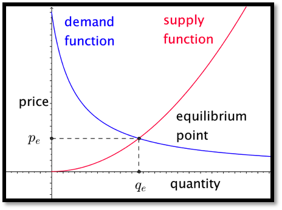
However, in that model, there were people who were willing to sell for less than the equilibrium price and people who were willing to buy for more than the equilibrium price. These people got an exceptionally good deal in the transaction. We would like to measure that benefit, since we can think of it as the extra profit the suppliers and buyers make on the transaction. We note that each side will have an incentive to maximize that benefit.
Focus first on the consumer side. The area under the demand function, from 0 to the quantity sold, measures the consumers’ willingness to spend. The area in the rectangle with that same base and height equal to the sale price measures the actual consumer expenditure. The difference between the two is a quantity we will call consumer surplus.
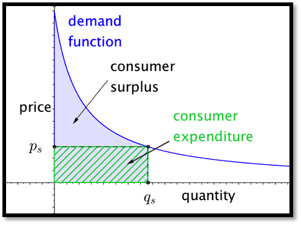
In calculus terms:
\begin{equation*}
\text{Willingness To Spend} = \int_0^{q_s} \text{demand function}(q)\, dq
\end{equation*}
\begin{equation*}
\text{consumer expenditure} = \int_0^{q_s} p_s \, dq
\end{equation*}
\begin{equation*}
\text{consumer surplus}= \int_0^{q_s} (\text{demand function}(q)- p_s )\, dq
\end{equation*}
As long as the price stays on the demand function curve, a lower price means a greater quantity sold, and a greater consumer surplus.
In a similar manner, we can focus on the producer side. The area under the supply function, from 0 to the quantity sold, measures the producers’ need for revenue. The area in the rectangle with that same base and height equal to the sale price measures the actual producer revenue. The difference between the two is a quantity we will call producer surplus.
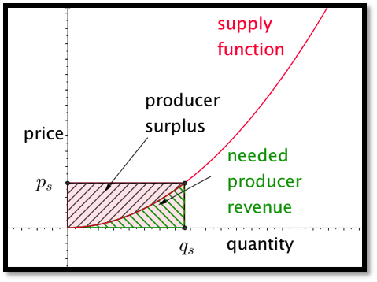
In calculus terms:
\begin{equation*}
\text{Needed revenue}= \int_0^{q_s} \text{supply function}(q)\, dq
\end{equation*}
\begin{equation*}
\text{producer revenue}= \int_0^{q_s} p_s \, dq
\end{equation*}
\begin{equation*}
\text{producer surplus}= \int_0^{q_s} ( p_s-\text{supply function}(q)) \, dq
\end{equation*}
As long as the price stays on the supply function curve, a higher price means a greater quantity sold, and a greater producer surplus. Consider first an example where the supply and demand functions are simple enough that the computations can all be done by hand.
Example 7.8.1. Producer surplus with linear functions.
I am trying to sell widgets and have determined the supply and demand functions to be:
\begin{align*}
\text{supply price}(\quantity) \amp = 4+\quantity\\
\text{demand price}(\quantity) \amp = 106- 2*\quantity\text{.}
\end{align*}
Find the equilibrium price and quantity. Find the producer and consumer surpluses when the shirts are sold at the equilibrium price. If the producers form a cartel, find the price that maximizes producer surplus.
Solution.
By setting supply price and demand price equal to each other we find an equilibrium quantity of 34 and an equilibrium price of 38. The formulas for the consumer and producer surpluses become:
\begin{equation*}
\text{consumer surplus}= \int_0^{34} ((106-2q)-38)\, dq
\end{equation*}
\begin{equation*}
\text{producer surplus}= \int_0^{34} ( 38-(4+q)) \, dq
\end{equation*}
To evaluate the integrals we can notice that each is a triangle of base 34. One has height of 34 and the other has a height of 68. Using geometry, the consumer surplus is $1,156 and the producer surplus is $578.
To find the maximum producer surplus, we need to turn the endpoint into a variable. If the producers act as a cartel,
\begin{equation*}
\text{producer surplus}= \int_0^x ( (106-2x)-(4+q))\, dq=\int_0^x ( 102-2x-q)\, dq
\end{equation*}
\begin{equation*}
=\left.\left((102-2x)q-\frac{q^2}{2}\right) \right|_0^x=((102-2x)x-\frac{x^2}{2}=102x-\frac{5x^2}{2}
\end{equation*}
We can find the maximum of this by taking its derivative and setting it equal to 0. The maximum occurs when \(x=\frac{102}{5}=20.4\text{.}\) At that point the producer surplus is $1,040.40.
We now try an example where we need other techniques to evaluate the integrals.
Example 7.8.2. Producer surplus with numeric integration.
A store trying to sell t-shirts on campus has determined the supply and demand functions to be:
\begin{equation*}
\text{supply price}(\quantity)=5+\ln (\quantity+10)
\end{equation*}
\begin{equation*}
\text{demand price}(\quantity)=10+100/(\quantity+2)\text{.}
\end{equation*}
Find the equilibrium price and quantity. Find the producer and consumer surpluses when the shirts are sold at the equilibrium price.
Solution.
We load the supply and demand price functions into excel and use Goal Seek to find an equilibrium price. Rounding to the nearest unit for quantity and cent for price, we have an equilibrium price of $10.45 for a quantity of 222 shirts.
We then substitute these values into the equations for consumer and producer surplus.
\begin{align*}
\text{consumer surplus}\amp = \int_0^{q_s} (\text{demand function}(q)- p_s )\, dq\\
\text{consumer surplus}\amp = \int_0^{222} ((10+100/(\quantity+2))- 10.45)\, dq\\
\text{producer surplus}\amp =\int_0^{q_s} ( p_s-\text{supply function}(q)) \, dq\\
\text{producer surplus}\amp =\int_0^{222} ( 10.45-(5+\ln (\quantity+10))) \, dq\text{.}
\end{align*}
To evaluate these integrals we either use a Riemann sum approximation, like the one found on the example worksheet, or use Wolfram Alpha. In either case, rounded to the nearest dollar, we have a consumer surplus of $372 and a producer surplus of $191.
The sum of the consumer surplus and the producer surplus is referred to as the total social gain. As we looked at consumers’ surplus, we assumed that the sales were determined by supply and the price-quantity point was on the supply curve. Similarly, when looking at producers’ surplus we assume price is set by demand and the price-quantity point was on the demand curve. If both sides are made up of many individuals acting independently, the price-quantity point is the equilibrium point, which is on both curves. Selling at that point also maximizes the total social gain.
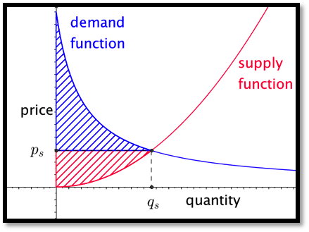
If however, either the producers or consumers can organize and act as a unit, they can form a cartel and limit the amount sold. If the producers form a cartel, they can lower production and raise the price.
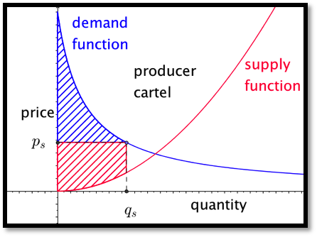
As we can see from the picture, this always lowers the total social gain. However for some reduction of quantity the producers’ surplus is increased. In the equation for producer surplus the price \(p_s\) is \(\text{demand function} (q_s)\) rather than \(\text{supply function} (q_s)\text{.}\) If the quantity goes down too far the producer surplus will also go down.
Example 7.8.3. Computing loss of social gain.
A store trying to sell t-shirts on campus has determined the supply and demand functions to be:
\begin{equation*}
\text{supply price}(\quantity)=5+\ln (\quantity+10)
\end{equation*}
\begin{equation*}
\text{demand price}(\quantity)=10+100/(\quantity+2)
\end{equation*}
The store owner has a monopoly on campus and decides to limit the quantity sold to 200 shirts and charge what the market will bear. Find the price, the producer surplus, and consumer surpluses. Find these numbers if the owner decides to limit sales to 50. How many shirts should the owner sell at what price to maximize producer surplus? If producer surplus is maximized, how much is the total social gain reduced?
Solution.
The formulas involved for supply and demand are the same ones we used in
Example 7.8.2. With a slight modification if the worksheet from that example we can set it to compute the Riemann sums approximating the surpluses. In particular, we use the demand function for finding the height of producer surplus. (See cell D7.)
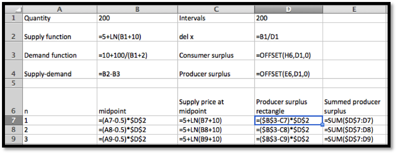
If we only want to sell 200 shirts, we can raise the price to from $10.45 to $10.50. The producer surplus rises from $191 to $199. However the consumer surplus falls from $372 to $362.
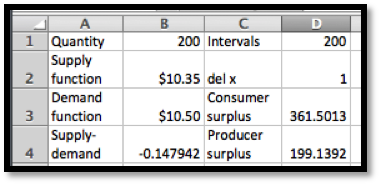
If we only want to sell 50 shirts, we can raise the price from$10.45 to $11.92. The producer surplus falls from $191 to $174. The consumer surplus falls from $372 to $230.
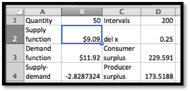
We can use solver to maximize the Producer surplus by varying the quantity. A quantity of 140 maximizes the producer surplus at $210, but is doing that the total social gain is down to $537 from $563.
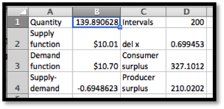
Similarly, if the consumers form a cartel, they can artificially reduce the demand. Since they will then pay the supply price the total social gain will be decreased, but the consumers’ surplus may be increased. In this case the consumer surplus is the integral of the difference between the demand function and the supply price of the quantity that will be sold.
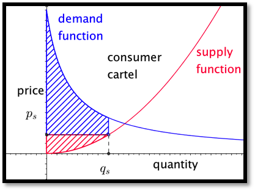
In the example we just looked at, both the supply and demand curves have a small slope, so the market is quite elastic from both the producers and consumers point of view. Is such a case there is less incentive to form a cartel. In other markets, like gas and oil, where the market is more inelastic, there is more incentive to engage in monopolistic practices.
Subsection 7.8.2 Lorenz Curves and the Gini Index
A question that arises in economics looks at the equity of income or wealth distribution in a country. In standard economic theories either too much or too little equity indicates a lack of opportunity and is a hindrance to growth. However, before being able to address the advantages or disadvantages of a level of inequity we need to be able to quantify the level of equity or inequity. The standard method is to use the Lorenz curve and the Gini index.
The Lorenz curve is defined by a function \(L(x)\text{,}\) with \(0\leq x\leq 1\text{,}\) that measures the proportion of something is held by the bottom \(x\) proportion of the population. Thus, if \(L(0.2)=.1\text{,}\) for the Lorenz function for income in a country, then the bottom 20% of the population earns 10% of the income in the country. Since, under usual definitions, a person cannot have negative income, the Lorenz functions are nonnegative and increasing. Since the Lorenz functions are measured from the bottom, we also have \(L(x)\leq x\) for all \(x\text{.}\)
We can make a few more observations. The population as a whole has the entire income of the population. An empty set of the population has none of the population’s income. Any bottom segment will have nonnegative income. In formulas these observations become \(L(1)=1\text{,}\) \(L(0)=0\text{,}\) and \(L(x)\ge 0\text{,}\) for all \(x\text{,}\) respectively.
If we had perfect equity, our Lorenz function would be \(L(x)=x\text{.}\) Any Lorenz curve we find for a real population will be below this curve. The Gini index (or Gini coefficient) measures the percentage that a real Lorenz curve is below the ideal curve.
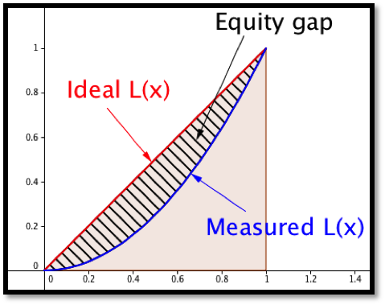
Computationally,
\begin{equation*}
G=\frac{\int_0^1 (x-L(x))dx}{\int_0^1 x dx}=2\int_0^1 (x-L(x))dx\text{.}
\end{equation*}
In practice this number is often multiply by 100, reporting the percentage (0 to 100) rather than proportion (0 to 1) of the area under the ideal function and above the measured function.
Example 7.8.4. Gini index with a formula for income distribution.
The Lorenz curve for income in a certain country is given by \(L(x)=.8x^3+.2x\text{.}\) What proportion of the income is earned by the bottom half of the population? Find the Gini index.
Solution.
To find the proportion earned by the bottom half of the population we substitute 0.5 in the equation.
\begin{equation*}
L(0.5)=(0.8) (0.5)^3+(0.2)(0.5)=0.1+0.1=0.2\text{.}
\end{equation*}
Thus the bottom 50% of the population earns 20.% of the total income. To compute the Gini index, we compute:
\begin{equation*}
G=2\int_0^1 (x-0.8x^3-0.2x)dx=(2)(0.4x^2-0.2x^4 ) |_0^1=.4\text{.}
\end{equation*}
So the Gini index in this hypothetical country is 40. To put this number in context, the reported Gini index for the United States in 2009 was 46.8.
In practice, the Gini index is an application where a numeric approximation of an integral is the method most likely to be used. We are unlikely to get a formula for income distribution. Instead we are likely to find data points. Since there is no good model for how the income will be distributed, we can simply connect the points with line segments and find the area using the area formula for a trapezoid.
Example 7.8.5. Gini index with a chart for income distribution.
We have the following data from the census bureau on income distribution in the US in 2008. Compute the Gini index.
| Population %tile |
0 |
20 |
40 |
60 |
80 |
90 |
100 |
| Income %tile |
0 |
3.4 |
12.0 |
26.7 |
50.0 |
78.5 |
100 |
Solution.
We recall that the area of a trapezoid is (width)(average height). We put the data into a spreadsheet.
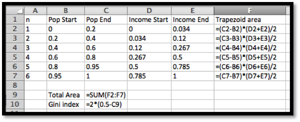
Then we evaluate the formulas.
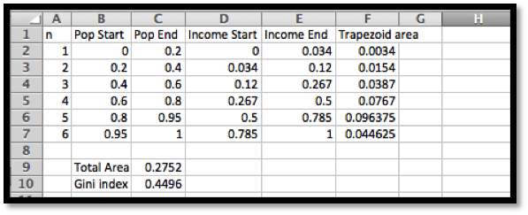
In percentages, the Gini index is approximated at 45.